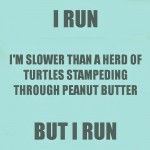

I like to think I live in the real world even though I am an educator and for years my students thought I lived, slept and ate in the school. Students would stare at me when I was in public and for the longest time I would check for the roll of toilet paper stuck to the bottom of my shoe, or look in the mirror to see if I still had a milk mustache (or something worse), or was I in one of those dreams where I forgot to get dressed and was still in my pyjamas? And then it dawned on me that they were used to seeing me in their world at school and the world at Wal Mart was a seemingly different place. Many people say that in school we need to present real world problems for students to solve and I for a long time I went along with it. But then I heard Tom Hierck at SELU say that “school is a student’s real world”.
{kind=link}
In education I hear people say that school does not reflect the real world and with the latest spotlight on assessment, I really hear the complaints that our current practices do not reflect the real world nor prepare children for the real world. And that makes me think about the real world I live in.
I enjoy running. Most of the time. Sometimes I simply enjoy the scenery, the weather, or I feel grateful that I am able to run where I want, when I want. That I am capable of running. And sometimes I think. What I like the most about running is allowing my thoughts to run wild as I just try to put one foot in front of the other even if it is at a turtle’s pace.
One day this summer I was thinking about running while I was running. I was preparing for a run in Banff. Each time I went out for a run I would set a new mini goal or challenge. Sometimes the goal was to run a certain distance, sometimes my goal was to run at a certain pace, sometimes my goal was to run hills and sometimes my goal was simply to get out there and move.
All of these mini goals or challenges could be measured in different ways. This made me think about education. Each year we set broad goals for students and challenges are created to test and prepare for those goals along the way.
I measure my running progress in different ways and there are different benefits to achieving my goals. I set smaller goals just as a teacher may scaffold learning. Some days I can easily accomplish my challenges when my body is rested and sometimes I am unable to achieve my challenges when the weather is windy or too hot or the goal I have set is beyond my zone of proximal development. When I achieve a goal I feel good about myself and I am ready to continue to challenge myself. When I feel good about myself I feel like I can conquer anything I set my mind to. I think about our students who achieve and feel confident to continue to challenge themselves. When I run I am more cognizant of my habits and I drink more water and eat healthier foods. Why would I work so hard exercising and ruin the benefits by eating junk food? When our students experience success and achievement in one area, they are more apt to be ready to learn in other areas. When I don’t feel successful I try something else or try what I was doing a different way and to be honest, sometimes I quit. I purchased an app which was supposed to improve my pace. The voice told me to run faster. I couldn’t run faster; I didn’t know how to run faster so I quit for awhile because I didn’t know how to improve and I felt like a failure. Then I downloaded an app that tracks my data; the app tracks the time I run, the distance, the elevation, the number of work-outs per week, it allows me to set goals and tracks those goals and every once in awhile I get an e-mail certificate notifying me an accomplishment.
In terms of measuring my progress, there are many ways I can determine my progress. One of my goals for running is weight loss so of course; I can set goals and measure my progress with the scale. But that is not the only way I can measure my progress. I can also self-assess by asking myself how I feel (health/unhealthy), seeing how my clothes fit (tight, loose, just right), taking measurements and collecting data on my speed and distance when I run. Triangulation of data – the same reason we don’t simply use one piece of assessment evidence to determine student learning, I can’t only use the scale to determine my progress.
Although I am an adult and in more control of my life than many of our students, it is still up to me to get myself off the couch and out running. I don’t get a 0 or feel like a failure if I miss a run. If I miss some runs I may not progress as quickly as I might like. If I miss a lot of runs, I won’t be ready for the road race and I will feel foolish. I know this because I have been unprepared for races and I have learned that I need to train and prepare for road races. There will always be people around me that will run faster and farther regardless of how much I train and that is why I have to set goals for myself. There are people that will challenge me and whom I will provide a challenge. A couple of years ago my friends and I were running in Banff and we all agreed to wear our Rider jerseys. Shortly after the start line we split up to run at our own paces. Near the finish line a man ran up beside me and said he had been trying to catch up all race because he didn’t want a Rider fan to beat him. I had no idea I was providing a challenge for this man and I had no idea I would be trying to beat a stranger to the finish line but a little healthy competition provided me an opportunity to push myself further than I thought I could. (And yes, I did beat him across the finish line!)
Running is a part of my real world. I set goals for myself, I assess my progress of those goals regularly and I respond to the data to continue to make improvements. In a classroom, we have outcomes as broad goals for students. We chunk or break down those goals into smaller achievable pieces and provide opportunities and experiences for student learning, understanding and growth. Sometimes students are unable to meet those goals and we need to respond to those needs by possibly changing our instructional strategies, teaching the material in a different way or using different tools. We find different ways to measure the goals of our students and use various pieces of evidence to determine student learning in relation to the goals that have been set. We know that when we provide meaningful feedback to kids that they can see what they have to do to improve and when we don’t provide feedback students disengage in their own learning and progress. When students achieve a goal, we need to celebrate and that celebration can simply be the internal feeling of accomplishing that goal (I climbed that 5km mountain in Banff and finished the 10k run) or having someone share in that celebration (a teacher commenting on a job well done) and sometimes that extrinsic certificate along the way gives some required prompting to continue along the journey to achieving a personal goal.
What do you think? Do you live in the real world? What kinds of goals do you set for yourself? How do you measure your goals? How do you respond to your successes and failures?
{kind=link}
Is school a real world?